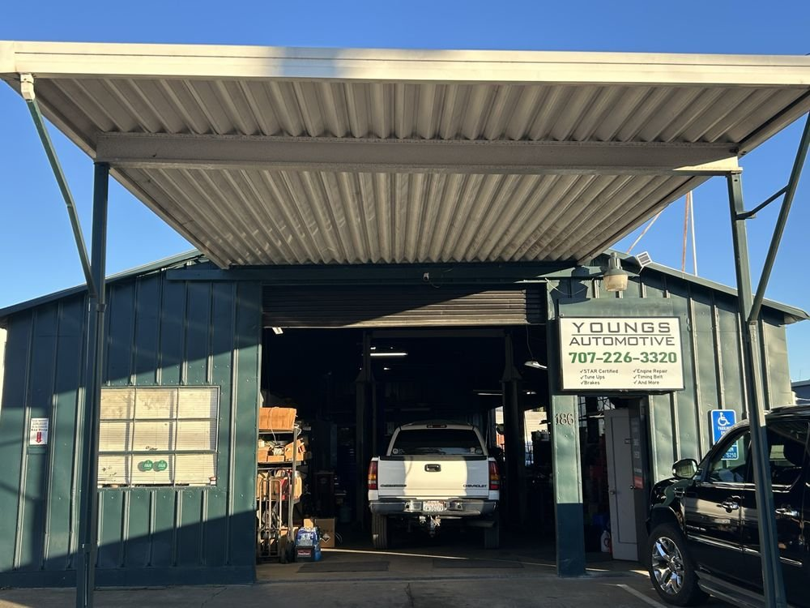

Independent website concepts · Aansh Bali
Built for the
next appointment.
Sample websites for local auto repair shops. Each concept brings the essentials into focus: the services, the shop, the people, and a clear way to book a repair.

SANTA CLARA, CALIFORNIA
Preferred Auto Repair
Explore the concept ↗
HAYWARD, CALIFORNIA
Quik Smog Hayward
Explore the concept ↗
NAPA, CALIFORNIA
Young’s Automotive
Explore the concept ↗These are unofficial concepts for review. View my work and résumé ↗ · Photo and information sources